Module 5—Acids and Bases
 Read
Read
Up to now you have investigated many of the properties of acidic and basic solutions. In Module 4 you examined procedures for preparing solutions. What must you consider when preparing acidic or basic solutions of a desired pH or concentration?
Calculating the pH of a Stock Solution

© Image courtesy of Shutterstock.com
The ability to prepare a solution with a specific pH is a necessary skill for laboratory work. Work through the following examples to see how the pH of an acidic or basic solution can be predicted using information including the identity and mass of the solute, as well as total solution volume.
You may wish to refer to information about the preparation and dilution of solutions on pages 803 and 804 in your textbook. You may also want to review information on significant digits and precision on page 814 of your textbook.
Example 1: 2.56 g of hydrogen chloride gas, HCl(g), is dissolved in water to make a 300-mL solution. Calculate the pH of the solution.
Step 1: List the knowns.

Step 2: Calculate the number of moles of HCl(g).

Step 3: Calculate the concentration of HCl(aq).

Step 4: Determine the concentration of H3O+(aq).
HCl(aq) + H2O(l) → H3O+(aq) + Cl–(aq)
HCl(aq) is a strong acid. Strong acids ionize completely (reacts >99% with water). Therefore, the hydronium-ion concentration will be the same as that of HCl(aq).
Step 5: Calculate the pH.

The pH of the solution is 0.631.
Example 2: 330 mg of solid barium hydroxide, Ba(OH)2(s), is dissolved in water to make a 600-mL solution. Calculate the pOH of the solution.
Step 1: List the knowns and unknowns.
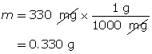


Step 2: Calculate the number of moles of Ba(OH)2(s).

Step 3: Calculate the concentration of Ba(OH)2(aq).
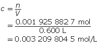
Step 4: Calculate the hydroxide-ion concentration [OH–(aq)].
Ba(OH)2(aq) → Ba2+(aq) + 2 OH–(aq)
Ba(OH)2(aq) dissociates completely in water, producing two moles of hydroxide ions for each mole of Ba(OH)2 that dissolves. Therefore, the hydroxide-ion concentration will be double that of Ba(OH)2(aq).

Step 5: Calculate the pOH.
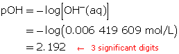
The pOH of the solution is 2.192.
Example 3: Calculate the mass of strontium hydroxide, Sr(OH)2(aq), required to make a 320-mL solution with a pOH of 4.75.

Calculate the hydroxide-ion concentration.

Calculate the concentration of strontium hydroxide.
Sr(OH)2(aq) → Sr2+(aq) + 2 OH–(aq)
Sr(OH)2(aq) dissociates, producing two hydroxide ions for each particle of Sr(OH)2 that dissolves. Therefore, the concentration of Sr(OH)2(aq) will be half that of OH–(aq).
cSr(OH)2 = 1.77827941 x 10-5 mol/L

Determine the number of moles of Sr(OH)2(aq).
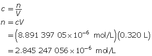
Determine the mass of Sr(OH)2(s).

To make the solution, 0.35 mg of strontium hydroxide is required.
 Self-Check
Self-Check
SC 1. 3.10 g of HI(g) is dissolved in water to make a 450-mL solution. Calculate the hydronium-ion concentration and the pH of the solution.
SC 2. 540 mg of solid potassium hydroxide is dissolved in water to make a 700-mL solution. Calculate the pOH of the solution.
SC 3. Calculate the mass of solid barium hydroxide required to make an 80-mL solution with a pOH of 2.65.
Self-Check Answers
SC 1.
Step 1: List the knowns.

Step 2: Calculate the number of moles of HI(g).
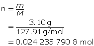
Step 3: Calculate the concentration of HI(g).

Step 4: Calculate the hydronium-ion concentration, [H3O+(aq)].
HI(aq) + H2O(l) → H3O+(aq)+ I–(aq)
HI(aq) is a strong acid and completely ionizes in water. Therefore, the hydronium-ion concentration will be the same as that of HI(aq), which is 0.0539 mol/L.
Step 5: Calculate the pH.
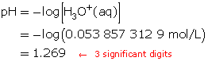
The hydronium-ion concentration of the solution is 0.0539 mol/L and the pH is 1.269.
SC 2.
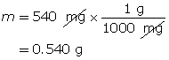


Calculate the number of moles of KOH(s).
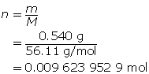
Calculate the concentration of KOH(aq).
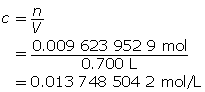
Determine the concentration of OH–(aq) in solution.
KOH(aq) → K+(aq) + OH–(aq)
A 1-to-1 ratio exists between KOH(aq) and the hydroxide ion. Therefore, the hydroxide-ion concentration is the same as that of KOH(aq).
Calculate the pOH.
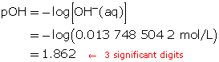
The pOH of the solution is 1.862.
SC 3.
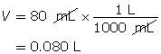

Calculate the hydroxide-ion concentration of the solution.
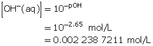
Calculate the concentration of barium hydroxide.
Ba(OH)2(aq) → Ba2+(aq) + 2 OH–(aq)
A 1-to-2 ratio exists between Ba(OH)2(aq) and the hydroxide ion. Therefore, the concentration of Ba(OH)2(aq) will be half that of barium hydroxide.
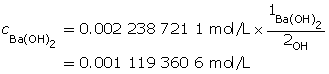
Determine the number of moles of Ba(OH)2(aq).

Determine the mass of Ba(OH)2(s).

The mass of barium hydroxide required is 0.15 g or 15 mg.